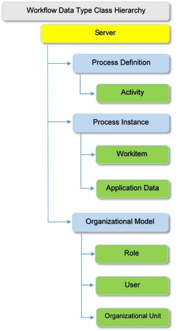
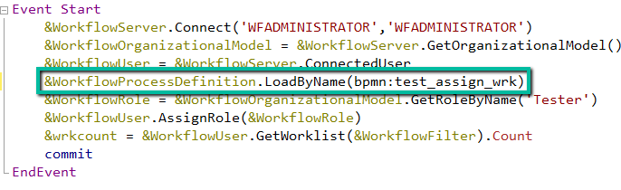

GeneXus BPM Suite provides an API for handling Workflow data types, which are a series of objects that model the different entities of the Workflow system. Each object (data type) has a series of properties and methods that allow interaction with the system. The purpose of the following sessions is to describe the different objects, enumerating each one of their properties and methods.
The following figure shows the chart corresponding to the Classes Hierarchy of the main data types:

See Workflow Data Types: Programming best practices in order to learn how to correctly use the Workflow Data Types.
To work with the process definition, the process instance, and the workitem that are running it´s necessary to access the WorkflowContext as follows:
&WorkflowContext.ProcessInstance
&WorkflowContext.ProcessDefinition
&WorkflowContext.Workitem
IMPORTANT: Be aware that when using any of the Workflow Data Types exclusively, GeneXus doesn't commit automatically. Meaning that Workflow Data Types don´t commit when used, so every time you use them to do an update you must commit the changes. Also, take into consideration the LUW when using the Workflow Data Types and commiting so the changes are applied correctly.
As from GeneXus 17 upgrade 2, the possibility of referencing the names of a diagram in procedures or events is added as follows:
